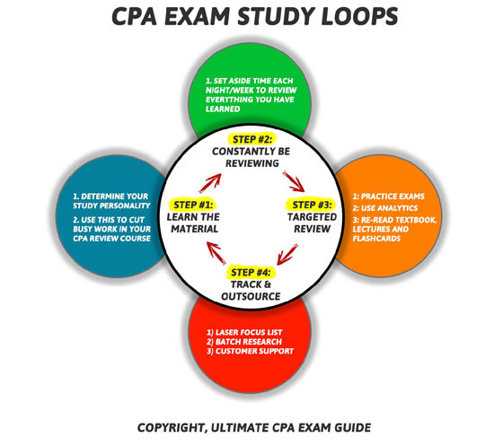
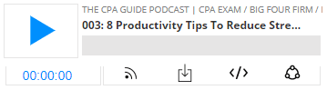
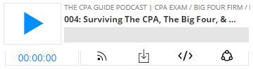
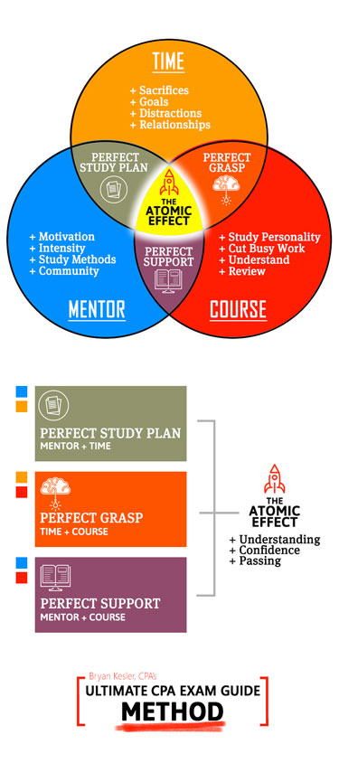

Best CPA Exam Advice From Top CPA Mentors
-
Take The CPA Exam As Soon As Possible
-
Mental Preparation Is A CPA Exam Requirement
-
Expect To Study Between 100-200 Hours Per Section
-
Don't Stress About Scheduling Your Exam
-
Plan For Your Journey To The Prometric Center
-
Never Try To Guess Your CPA Exam Score
-
Find A CPA Review Course Based on How You Learn Best
-
Craft a Killer CPA Exam Study Plan & Routine
-
Constantly Be Reviewing Everything You Have Learned
-
Use Flashcards Every Day
-
Create A CPA Exam Final Review Study Funnel To DOMINATE On Exam Day
-
Avoid CPA Exam Depression - Know The Signs
-
Don't Spend Too Much Time On Practicing Simulations
-
Don't Forget About Friends & Family While Studying For The CPA Exam
-
Notify Your Employer Of Your CPA Exam Plan
-
Lookout for the 18 Month Time Limit!
-
Determine The Best Time To Study Every Day - There Is One I Promise!
-
Lack of Confidence Does Not Mean You Aren't Ready To Sit For The CPA Exam
-
Your Practice Exams Are For Testing Knowledge And Time Management
-
Don't Let Passing or Failing Derail Your Motivation
-
Find A CPA Exam Coach or Mentor
Start Today! There is no "perfect" time to take the CPA exam and the longer you procrastinate the harder it will become to pass.
Be aware that in order to sign up for the CPA Exam you will need to meet your states specific education, residency, age and citizenship requirements.
You also need to understand the CPA Exam Application process as it is a process that takes a long time and proper planning.
You will also only have 18 months to pass the CPA exam once you have passed your first section so you need to choose the order you take the CPA exam very carefully.
I recommend you start with the section that you are most familiar with the content whether it's FAR, AUD or REG. Typically you will want to save BEC for last because it has the highest pass rate.
At the end of the day there is no wrong answer when picking a section to take first as long as your answer isn't to procrastinate!
What Does A Certified Public Accountants (CPA) Do?
According to the AICPA, "The Uniform CPA Examination protects the public interest by helping to ensure that only qualified individuals become licensed as U.S. Certified Public Accountants (CPAs). Individuals seeking to qualify as CPAs – the only licensed qualification in accounting – are required to pass the CPA Examination."
Wall Street, our clients and our communities rely on us to keep our economy and governements honest!
What does this mean for YOU though, is passing the CPA exam actually worth it?
Here Are 10 Reasons You Need To Become A CPA
-
It will be one of the most satisfying achievements of your life.
-
It will fundamentally change how your career progresses if you play your cards right.
-
You will have instant ability to command a higher salary either by asking for a raise or finding a new job.
-
You will have the flexibility to do what you want with your career and won’t be stuck on one path.
-
You will have instant respect among your peers and community.
-
You will recession proof your career by joining the 40% of accountants who have passed the CPA exam.
-
You will know that you have done everything in your power to be the best that you can be.
-
You will have a leg up on the non-CPA competition at any job you apply for. Internal or external.
-
You will have three awesome letters after your name.
-
You can throw it in the faces of all the people who doubted you!
Is The CPA Exam Only For Public Accountants?
The CPA exam is NOT just for public accountants!
If you have aspirations of jumping into private or governmental accounting positions, starting your own firm, joining the FBI or CIA or even becoming a professor, passing the CPA exam will absolutely get you there faster than any other professional license.
Passing the CPA Exam gives you the freedom to become more flexible with your career than you ever could without becoming a CPA.
Need proof? Talk to any of the dozens of headhunters who are constantly calling you and see what they say.
Am I Too Old To Sit For The CPA Exam?
It's never too late to sit for the CPA exam!
The older you are the harder it will be to find a new job, move into a new position or start that post-retirement side business you have always wanted to create.
The good news is that even if you haven't been in college for a decade or two, the CPA review courses have you covered.
They will teach you EXACTLY what is tested on the CPA exam.
If they don't you can always use a service like CPA Tutor Boost and hire a one-on-one tutor to help walk you through any difficult concepts.
If you are serious about starting, studying and passing the CPA exam on your first try then it is imperative you go all in.
If you are not 100% mentally prepared to pass the CPA exam then you will procrastinate, lose focus and fail.
Here are the five steps to follow to mentally prepare for your journey to passing the CPA exam.
How To Mentally Prepare For The CPA Exam
-
Prepare for the fact that you may fail this exam
-
Determine what is less and more important than becoming a CPA and prioritize your time accordingly
-
Communicate with your family about what it will take to pass
-
Keep a list of reasons WHY you must become a CPA
-
Expect to NOT understand everything you learn the first time around
If you do not mentally prepare for the CPA exam then you are setting yourself up for burnout and failure.
My recommendation is that you should ignore that recommendation and just focus on your personal situation, your work schedule and your family life.
If you are a slower learner then you are going to need more time and you will need to adapt.
Passing the CPA exam is all about maximizing your short term memory so the quicker you can sit for the exam the better.
This may sound counter intuitive but the less time you give yourself to study, the more pressure you are going to feel to get things done and the faster you will get through the material and the more fresh it will be on exam day.
Think of it this way.
If you give yourself 16 weeks to study, you will burn yourself out.
You won't feel pressure to get studying done early on.
You will also have a much harder time remembering what you taught yourself in the early weeks because it will be stale by exam day and out of your short term memory.
How Many Hours Do You REALLY Need To Study For The CPA Exam?
-
Aim to study 20 hours per week
-
Give yourself between 6-12 weeks to study maximium per section
-
Cut out all of your distractions in life
-
Study with high intensity
- Set micro-goals for yourself attached to micro-rewards for hitting your goals
Remember the CPA exam is designed to mirror what you will experience during busy season so treat it the exact same way.
Plus a positive side effect is that your studying won't drag on for an eternity the harder you push yourself!
A huge rookie mistake CPA candidates make is trying to plan out all four sections of the CPA exam far in advance.
PLEASE DON'T DO THIS!
The key to passing the CPA exam is to remain flexible.
With a pass/fail rate that averages around 50% per section you can't risk locking yourself into a set schedule that doesn't account for failure.
This is a recipe for losing $250+ in CPA exam scheduling fees or more.
5 Simple Steps to Signing Up For The CPA Exam:
Signing up for the CPA exam doesn't have to be painful, follow these 5 steps and you will be set
1) Review Your Exam Requirements - refer here for specific state requirements
2) Submit your exam application and find a CPA review course that maximizes how you learn best
3) Request and forward your transcripts to your state board of accountancy
4)
Pay your CPA Exam fees to receive your notice to schedule (NTS)
5) Schedule your exam at your local Prometric center
Have you ever been to Fort Knox?
If not, you will have a somewhat similar experience visiting your local Prometric Testing center.
They take cheating that seriously (No Joke!).
Prometric is a national standardized test taking center that works with NASBA to proctor your exams.
Here is a quick list of everything you need to know before entering a Prometric Center.
What Can't I Bring To The Prometric Center For The CPA Exam?
1)
No calculators
2) No pen, paper or any other material (unless you request them in advance)
3) No electronic device whatsoever
4)
No watches (no covert spying device)
5) Expect
TSA style ID check and scan (includes security wand check)
What Should I Bring To The Prometric Center For The CPA Exam (SOURCE)
1) Bring two forms of ID that match your NTS (ID = Drivers License, valid credit card passport, etc...)
2) Arrive at least 30 minutes early to ensure you have time to sign in and go through the security process.
3) A locker will be provided for you to place all personal belongings.
How Many Hours Is The CPA Exam At Prometric? (SOURCE)
1) You have four hours to complete each section of the CPA Exam
2) Your exam will have a countdown timer for you to track your total time remaining
3) After each testlet you will be given the option to take a short break, but remember that the clock keeps ticking! Choose your time wisely.
The reason it's so important to understand what happens at a Prometric Center is to do everything possible to reduce your test anxiety.
The fewer surprises you have, the more you can focus on the task at hand.
It is not easy to understand how the CPA exam is graded. The best resource for understanding how the CPA exam is scored is at the following linkprovided by the AICPA.
How Is The CPA Exam Graded?
The CPA exam is an extremely complex exam that has many different variables that can affect your score. Getting a 75 does not mean you got 75% of the questions correct! It is more of the percentile of where you scored compared to everyone else who took the exam.
The following is my understanding of the factors that go into your exam:
-
When taking your exam there will be some "pre-test" questions which are essential questions that are being given a test run to see how test candidates score to them. These questions are not included in your score and are not graded.
-
Don't forget that the CPA exam is an adaptive test that will change in difficulty based on the questions you are answering correctly. So if you are answering the difficult questions correctly the next multiple choice section will contain increasingly difficult questions.
-
Points are given to multiple choice questions based on difficulty. So even though you are maybe getting several wrong in a difficult multiple choice section you still may receive more points than those test takers who did not advance to the more difficult multiple choice section but were still in a medium level. So don't feel discourage if you feel like the questions are insanely hard.
Key Takeaway
The reason I provided you with this information is to prove to you that there is absolutely no way you can know how well you scored on the exam (even if you walk out 100% sure you failed).
There are to many variables to take into account and if you start to try to calculate them in your head, you will lose valuable focus and motivation.
Just take your exam and immediately begin thinking about starting your next exam.
Easy enough right?
FYI - Be sure to check out CPA Exam Score Release Schedule frequently to know when your next score will be released.
Without a doubt the most important step in passing the CPA exam is picking a CPA review course that maximizes how you learn best.
If your course isn't designed based on how you actually learn it will lead to busy work and inefficiency.
Here Are The 7 Steps To Picking The Best CPA Review Course
Step 1: Determine How Do You Learn Best?
Think back to college and write down at least three of your study strengths and three weaknesses.
If it helps you can take a personality quiz like the Enneagram to help you determine this.
PRO TIP: Focus on identifying study activities that were efficient and helped you actually understand materials.
Example: I preferred to read the text and solve the problems on my own (class was NOT a learning experience for me) and I discovered that making in-depth outlines of my textbook was actually busy work and not productive studying.
Step 2: Determine If You Are A Visual Learner or Self-Studier?
Based on how you determined you studied best would you say that you prefer to study on your own and teach yourself the material OR do did you do your best learning in the classroom?
Step 3: Identify The CPA Exam Study Materials That You Need Based On Your Learning Style
If You Are A Self-Studier...
If you determined you are more of a self-studier then you need to focus on finding a CPA review course that focuses on providing a solid textbook, pre-made flashcards, and tons of multiple choice and minimal video lectures.
I personally recommend the following CPA Review Courses if this describes you:
Gleim CPA Review
UWorld Roger CPA Review
Wiley CPAexcel Review
Yaeger CPA Review
If You Are A Visual Learner
If you determined that you did your best learning in the classroom then you need to focus on finding a CPA review course that provides you with the BEST video lectures or possibly find a live/virtual class to attend, a program that links the multiple choice very well with the lectures, and a course that has an in-depth study planner to keep you structured.
If you fit this description best, then here are the CPA courses I recommend most:
UWorld Roger CPA Review
Becker CPA Review
Yaeger CPA Review
Wiley CPAexcel
Step 4: Complete Your CPA Review Course Research
Find a trustworthy review site to make sure you get the inside scoop on all of the avilable CPA Review Courses.
If you trust me, head to my Top 10 Best CPA Review Courses Comparison Page and filter by Self-Studier or by Video Lectures and read my assessments of each course.
Link: https://www.cpaexamguide.com/best-cpa-review-courses
Step 5: Try The CPA Review Courses You Have Identified
After identifying 2-3 CPA review courses that match how you learn best, give each course a trial run either by finding the free trials in my review or by using the free trial links of my 4 most recommended courses below:
Roger CPA Trial
Becker CPA Trial
Yaeger CPA Trial
Wiley CPAexcel Trial
Gleim CPA Trial
You can also compare some of the most popular courses individually at the links below:
Wiley CPAexcel vs Becker CPA Review
UWorld Roger CPA Review vs Becker CPA Review
Step 6: Find The Largest Discount Available For Your CPA Review Course
Once you find the CPA review course for you then head to my CPA Exam Guide Review Course Discounts Page and ensure you are getting the best deal possible!
Link: https://www.cpaexamguide.com/best-cpa-review-discounts
Fun Fact: I bundle my mentorship program Ultimate CPA Exam Guide with the majority of the most popular CPA review courses. You can learn more here! There are also significant savings for bundling.
Step 7: Sign Up For My Free CPA Exam Mentoring Course To Learn How To Maximize Your CPA Review Course
Join my free Ultimate CPA Exam Guide and I will give you a PDF copy of my 7 Step Process to picking the Best CPA Review Course for you and my free CPA Exam Mentoring Video Series. See you on the inside.
Link: Join Free CPA Exam Mentorship Series
As many of you know from my Ultimate CPA Exam Guide Mentorship Course and iTunes Podcast, I failed the first 4 sections of the CPA exam in a row by a range of a mere 2-6 points.
What was I doing wrong?
I treated the CPA exam like a college test! This meant I was going through the lectures + highlighting like a robot. Then I would read through the text and make any notes on the important concepts I saw, and then make my own flashcards on top of that.
I tried to memorize the entire textbook for every section! For most of us, this was no problem in college, because the tests were much MUCH less broad.
The CPA exam is a beast of an exam, unlike anything you have ever done before, and requires study tactics unlike anything you have had to perform.
The moment of clarity happened for me when I found out I had failed the 4th part of the CPA exam. I decided that this test was no joke, and if I was going to succeed I was going to have to drastically change my study method.
How To Create A CPA Exam Study Plan That Works
Step 1: Identify Your Primary Learning Resource
As always, you need to determine your study personality before you start studying and using a CPA review course.
To use myself as an example, I discovered that I am a self-studier. Meaning that I learn best by reading and teaching myself.
So I decided that it would be in my best interest to cut out the video lectures and just focus on reading the text and answering questions and then only use video lectures as a reference if needed.
As you know CPA Review Courses have two primary resources. Their lectures and the textbook.
They both present the same information just differently.
So it's best if you figure out which resources helps you learn the fastest and use that as your primary learning tool.
That being said, if for any reason you come across a topic that is too complex to teach yourself, or you find yourself spinning your wheels, then you NEED to go to the video lectures or the text and see if their explanation helps you.
If that still doesn’t work then it is time to contact customer service or visit the forums for help.
Just remember that the CPA exam is so broad that it is not the most effective way of studying if you end up spending several hours on one topic, so pick your battles wisely.
RESULT: Saved me 15-20 hours per section (70 hours total from my review course)
Step 2: Cut Out Study Activities That Are Busy Work
Remember that as you study for the CPA exam that your MOST valuable resource is time.
You don't have time like you did in college to take notes over everything.
You also can't expect to be able to just cram before your exams and re-learn everything in the earlier chapters.
You have to be smarter.
For example, instead of making my own flashcards, I just invested in pre-made cards.
Then IF I ran across something that I didn't want to forget I would make a quick flashcard for it.
I focused on just-in-time learning instead of shotgun learning where I made flashcards for anything and everything.
RESULTS: Saved me around 1 hour per week for each section X 24 weeks (based on studying for 6 weeks per section) = approximately 25 hours
Step 3: Avoid Spinning Your Wheels At All Costs
Spend no more than 3-5 minutes on a multiple choice question. Use the analytics provided by your review course to measure how long on average you are spending on each multiple choice question and if it is longer than 5 minutes you need to find ways to speed up your test taking.
The goal being that you need to prepare yourself for the real CPA exam. The CPA exam is so incredibly broad that if you spend 15 minutes on one multiple choice question it just isn’t efficient in the broad scheme of things. Just keep moving and flag the question and save it for later so you can address it if you have time later on.
Spinning your wheels also makes you indecisive which can be very dangerous as well. The worst part of the CPA exam multiple choice questions are that there always seems to be 2 right answers. It is up to you to determine which one is most correct, because unfortunately there is no partial credit! I always found that going with my gut was always better than just sitting there for an extra 2-3 minutes second guessing myself. Don’t let this be you.
If you find yourself spinning your wheels, write the question down and save it for later.
If you still don't get it then outsource it to your CPA review courses support or hire a CPA exam tutor to help!
RESULT: Before I changed my study tactics, I typically answered 1,200 practice questions for each section at an average of 4-5 minutes per question. By making a concerted effort, I successfully shaved 30 seconds off the average time of each question which equates to 40 total hours saved (or 10 hours per section). This allowed me to spend that time researching why I got certain questions wrong and strengthening my knowledge of that section.
Total Time Saved Breakdown
| Skipped Lectures and highlighting: |
Saved 70 hours |
| Skipped making my own flashcards and outlines: |
Saved 25 hours |
| Cut AVG time spent per question by 30 seconds: |
Saved 40 hours |
| Total time saved: |
135 hours! |
Key Takeaway
Once I implemented these changes to my study schedule, my scores jumped 5-15 points per section! It is not because I was studying less, but because I was studying the way that works best for me.
By cutting out all of the excess fat in my study schedule, I was studying more efficiently and the rate of my learning and retention skyrocketed!
Please understand that these tips worked for me, but they may not work for everyone. You know yourself better than anyone else, so please do yourself a favor and step back for a minute and look at how you are studying.
Do you see any inefficiencies or ineffective study activities that you are performing?
If so cut them out immediately and spend that time doing more productive studying that is actually going to help you learn the material. The review courses today try to cater to as many different types of people as possible, but you are unique. So don’t be afraid to do think outside the box like I did. The results can be amazing!
If you are afraid you are using the wrong CPA review course or just not happy with it, then you can always use my CPA Review Course Comparison Tool here to see if the way you learn best matches with your current review course.
If not and you are struggling to pass just like I did, then it might be time to make a change…
The #1 mistake I made while studying for the CPA exam is studying in a linear fashion.
-
Go through chapter 1, check
-
Move onto chapter 2, check
-
Continue onto chapter 3, check!
-
Repeat until final chapter AND freak out!
-
Forgot everything I learned in early chapters and have to scramble to re-learn right before exam
-
Fail
Even with today's advanced "adaptive" or "smart" learning technology that is being heavily marketed by all the major CPA review courses is not enough to save you from this linear study plan.
What's the solution?
A. B. R. - Always Be Reviewing
Setting aside just 15-30 minutes every other day to review will make a huge difference in how well you remember the material on exam day.
This is a process I like to call "CPA Exam Study Looping."

How To Implement CPA Exam Study Loops
-
Watch your CPA Course video lectures/read text for Chapter 1
-
Move onto chapter 2 and complete your learning activities
-
Set aside 15-45 minutes loop back and review chapters 1 & 2
-
Move onto chapter 3 and complete learning activities
-
Loop back and review everything you have learned so far from chapters 1-3
-
Repeat until you complete all chapters within 10 - 14 days of your exam date
Need Help Implementing CPA Exam Study Loops With Your CPA Review Course?
How you implement study loops is going to depend on your CPA review course, your schedule and many other variables.
I put together brief tutorials for UWorld Roger CPA and Wiley CPAexcel here for your reference.
I teach this process in great detail in my mentorship program Ultimate CPA Exam Guide and have a complete CPA Exam Support System for you to help you stay on track.
You can absolutely try to implement this all on your own using the steps above or I can speed up your learning curve by teaching you step-by-step how to do all of this to help you avoid any confusion and trial and error.
For more info on how to implement these strategies, check out www.cpaexammentor.com
Out of all of these CPA exam tips, I would not be a CPA today if it wasn't for the flashcards that I used to study and memorize definitions.
I made the early mistake of trying to make my own flashcards which turned into busy work.
I found that the pre-made flashcards offered by various CPA review course companies work best and then when you see something that is tripping you up, that's when you make your own.
Without a doubt, the MOST crucial period of your journey to passing any exam is the final 14 days prior to your exam.
This is also known as your “Final Review Period.”
You need to have a plan of attack for how you are going to ensure you remember what you need to know on exam day.
Feeling overwhelmed about this process?
I’ve got your back!
Introducing the Final Review Study Funnel
I want to share with you a study tactic that helped me pass the CPA exam (and more importantly has helped hundreds of my students recall what they need to on exam day).
It’s called a Final Review Study Funnel which is part of my CPA exam coaching course Ultimate CPA Exam Guide or “U.C.E.G.”.
The entire concept behind this Final Review Study Funnel is for you to funnel out everything you already understand so that you can focus on topics you don’t understand that you will need to know for exam day.
This is a simple 14-day process that any accountant can implement.
Let’s get started!

Phase 1: 14-4 Days Before Exam
Your Final Review Study Funnel starts when you are 14 days out from your exam day.
At this point you should be through all your study materials and have a decent grasp on the material (assuming you have made time to review the topics as you progress).
Your goal in Phase 1 is NOT to learn new material, but to start reviewing everything you have learned.
There are four steps you need to follow in this process:
Step 1: Day 14 & 13 Before Exam
Take two comprehensive practice exams over EVERYTHING on days 14 & 13.
Pro Tip of The Day: For your practice exams, I’d take at least 100-120 multiple choice questions. Simulations or Essays aren’t an efficient way to study at this point in your Final Review Study Funnel.
Pro Tip #2: If you feel like you are starting to see the same multiple-choice questions over and over it might also be time to invest in some fresh multiple-choice questions.
I highly recommend the Gleim Megabank, it’s what I personally used to pass the CPA exam and will absolutely give you more than enough fresh questions to test your knowledge.
Quick Link:
Gleim CPA Megabank
Step 2: Days 12-4 Before Exam
Once you complete your practice exam(s), look at your results in your analytics looking for trends in the areas that you scored weaker.
Any area you do not feel confident, record it and set aside an hour or two each day to deep dive into all those topics.
Step 3: Days 12-4 Before Exam
What does a Deep Dive look like?
I recommend that depending on your learning style, you find those topics in your text book, find the video lectures, or even utilize your flashcards or notes and use these resources to ensure you UNDERSTAND the material and not just MEMORIZE it.
When you understand the material, you will be able to find the right answer no matter what question is asked of you.
After you have reviewed these struggle topics then I would create another practice exam specifically over those struggle topics to ensure you helped your understanding.
Step 4: Days 12-4 Exam
Repeat steps 1-3 over and over until 3 days prior to your exam.
Phase 2: 3-2 Days Before Exam
By this point you will have taken close to a dozen multiple choice practice exams with an overall focus of identifying your weaker areas and you should be feeling confident.
Now it’s time to recreate the Prometric Center “Holy Cow This Is Actually Happening” Type Test Taking Experience.
Here’s what you need to do:
Step 1:
Lock yourself in your room for the allotted time for your exam.
Turn off your Cell Phone and close out of your social media on your computer and use this opportunity to do your best to create a truly simulated exam experience.
A great way to help you with this experience is to utilize the built in Exam Rehearsal feature that Gleim offers within each of their review courses.
It’s the closest thing to the real exam that I have found after reviewing close to a dozen CPA review courses.
I highly recommend it.
Step 2:
Be sure to follow the rules for your exam.
If there’s a mandatory break, take it.
If you are allowed scratch paper, use it.
If your test is broken into testlets, go through each testlet, double check your answers and then move onto the next testlet and don’t go back to the previous testlet and make changes just like you wouldn’t be able to do on your exam.
For essays and simulations follow exactly what you would be expected to do during the real exam as well.
Step 3:
Put pressure on yourself!
Taking professional exams is more than just about understanding the material it’s about being MENTALLY prepared as well.
Take these exams seriously.
Step 4:
Don’t get discouraged if during these practice exams you don’t receive a passing score.
Remember, there are so many variables going into the grading of your real exam and even some questions that aren’t graded at all!
Your grade on these practice exams is NOT an accurate representation of what your grade would be if it was the real thing.
Just focus on time management and mental prep during these Exam Rehearsals and forget the rest!
Phase 3: 1 Day Before Exam
The day of reckoning is upon us!
What should the final day before your exam look like?
Well here’s what I did.
NOTHING
I relaxed and took it easy.
I had a ritual of watching one of my favorite movies Wall Street to help pump me up.
I’d prepare a pre-exam playlist for my car ride over – mostly the original Rocky Soundtrack.
Then I would do some very light studying that involved reviewing some flashcards and re-reading my priority notes.
But that was it.
No practice exams no multiple choice or simulations.
At this point give your brain a well-deserved rest before exam day!
And most importantly you can rest easy knowing you just completed your Final Review Study Funnel and will be able to walk confidently into your Prometric Center and dominate your exam!
For more info on Final Review Study Funnels, check out www.cpaexammentor.com
A dangerous side effect of taking the CPA exam is absolutely depression.
Even if you are passing sections right and left you are not immune.
Here are some big signs you may be experiencing CPA exam depression:
-
Trouble eating or sleeping
-
Mood swings
-
Difficulty focusing at work
-
Difficulty enjoying your time with family and friends (feeling guilty for not studying)
If any of these signs begin interfering with your life it may be time to take a break from the CPA exam and do something to get your mind off of studying.
I always found treating myself to a night out at the ball park or going on a weekend get away was enough to recharge my batteries and get me focused again on what's important in my life.
Check out this Podcast episode, I know it will help you stay motivated when the going gets tough. (iTunes Source)

If you are still struggling with CPA exam depression then consider starting our free CPA Exam Coaching Video Series.
It will help get you back on track.
Simulations are random, are all designed differently and are typically focused on a specific topic.
For this reason I don't recommend spending significant amount of time taking practice simulations.
You absolutely need to use practice sims for time management, to understand the structure and the design of how to answer simulations efficiently, but using them as a study tool to learn the material is not efficient.
Instead of taking hundreds of practice sims you are better off focusing on taking as many multiple choice as you can and focusing on the explanations for why the question is right or wrong.
You will cover a wider variety of topics and it will help you understand the material much more effectively than taking hundreds of practice simulations.
Far to often I see CPA Candidates forget about their friends and family when studying for the CPA exam.
After a couple months go by they start to feel trapped in a bubble where they feel no one understands what they are going through.
This is a dangerous situation to be in and can absolutely lead to CPA exam depression.
Communication with family and friends is a must during this time.
You need to utilize them as accountability partners to keep you focused on your ultimate goal.
You also need to use them as rewards for hitting your study goals as well.
I interviewed some awesome folks who can help you navigate the messy world of family and friends + studying for the CPA exam. Please sit down and listen with your family and friends. (iTunes Source)

If you are working in public accounting, it's expected that you will be studying for the CPA exam.
But if you aren't then you need to take extra care to communicate with your employer what you are going through and what your schedule is to take the CPA exam.
MOST importantly is to keep your mouth shut around your peers.
The last thing you want is for co-workers to pop into your cube asking how studying is going.
Keep your head down, stay focused and let everyone know when you passed!
You will also want to follow these 17 study tactics for CPA candidates working full time that helped me study better.
To help you navigate communication with your employer, I interviewed a friend of mine Lucas Cherry who was working full time and we delve into how he managed studying and working a new job full time.
One of the most cruel parts about the CPA exam is that once you pass your first section of the CPA exam an 18 month countdown timer begins.
If you are unable to pass the remaining 3 sections in that 18 month time frame you will lose credit for your first section you passed and you will be forced to retake the exam.
When I was studying for the CPA exam I passed FAR on a hail mary pass, meaning that I took FAR in the final window before I would have lost BEC the first section I had passed.
Thankfully I passed with flying colors but I know countless CPA candidates who were not as lucky as I.
This is why planning which section to take last is almost as important as which one to take first.
Which is why I recommend taking BEC last due to the fact that statistically it has the highest pass rate.
Are you a morning person or a night owl? Do you have a long commute? Take a long lunch? Eat dinner at work? Live near a coffee shop or library?
These are all questions you need to answer when crafting your study routine.
I high advise that you utilize every second of your day to the fullest for two reasons:
-
You maximize the amount of studying you get done every day
-
So you have time every day to do something you want to do
When I was studying for the CPA exam I determined I was a night owl and here is what my daily routine looked like during the week:
-
Go to work at 8
-
Study for 45 minutes during lunch
-
Get home by 5
-
Work out for 30-45 minutes
-
Eat Dinner and shower
-
Study from 7:30-10:30
-
Grab an adult beverage and watch a favorite TV show
-
Go to bed and repeat
Your routine will look very different than mine but the key takeaway is that you need to find your routine and stick to it!
The CPA Exam is designed to make it so you never feel ready to sit for your next section. Is this cruel and unusual?
Yes absolutely!
But nothing worth having ever comes easy.
Think of it this way, the worst that can happen is that if you fail you will lose a bit of money and some time.
Compare this to healthcare, if you fail someones life is at risk!
Take comfort in the fact that if you screw up on the CPA exam no one is going to die!
Study as hard as you can, stick to your deadlines and do the best you can.
If your best isn't good enough to pass, then learn from your mistakes and repeat.
If I can come back from failing all four sections in a row, I KNOW you can do this.
For more info on HOW to gain more confidence, check out www.cpaexammentor.com
The final week before your exam is going to be full of dry runs at taking the real deal.
Simulated CPA exams are crucial to your success for two reasons.
-
It tests your overall knowledge
-
It allows you to practice time management
Understanding the material is only half the battle of the CPA exam.
You need to go into each section with a plan and you need to practice this plan as many times as possible.
Each section is going to have multiple testlets and because of how the exam is designed, once you complete a testlet you can't go back to it.
Here's what you need to do to prepare for each section of the CPA exam:
-
Determine how much time to give yourself per testlet - typically no more than 45-60 minutes per testlet
-
Save at least 10 minutes per testlet to double check your answers and for intelligent guessing
-
Plan to take the optional break!
-
Save yourself extra time for simulations
-
Keep track of your time as you progress
-
Practice Practice Practice!
For more info on HOW to find time to study and pace yourself, check out www.cpaexammentor.com
One of the most dangerous times in your journey to passing the CPA exam is right after you have failed or passed a section of the CPA exam.
You will enter an extreme valley or an extreme peak that can lead to a complete lack of motivation to study.
On one hand if you fail, you will feel hopeless and want to give up and you question why you are even studying for this exam.
On the other hand if you pass, you will gain overconfidence and you will likely risk not studying nearly as hard.
If either of these occur you need to fall back on your accountability partners to keep you focused on your ultimate goal of passing the CPA exam!
And if you don't have anyone in your life to keep you accountable, focused and motivated then you need to find a CPA exam mentor like Monica did.
Monica didn't let failing 9 times keep her from living her dream of passing the CPA exam. Which is why she found a CPA exam mentor!
A common misconception is that the only tools you need to pass the CPA exam are hard work and a solid CPA Review Course.
The problem with ONLY using these two tools is that you inevitably start re-creating the wheel.
Meaning that you have to figure the following out all by yourself...
-
Still have to figure out how to study the right way
-
How to sign up for the CPA exam
-
How to recover from failure (or passing) a section of the CPA exam
-
Teach yourself complex accounting topics that you may not have learned in college
-
Learn how to manage your stress levels
-
Bottle up all your CPA exam emotions because no one else understands what you are going through
And that's just half of what most CPA candidates experience!
But there is another tool (or person) who can help you solve lifes frustrations with the CPA exam that you and your CPA review course can't easily do...
What is a CPA Exam Mentor?
When I was studying for the CPA exam I tried all kinds of different mentors...
Shady Forums
Random blogs & youtube videos that offered vague and only mildly useful advice...
It wasn't until I finally sucked up my ego and asked the people in my life who had passed the CPA exam for advice did I actually make any progress or meaningful change in how I studied.
What I learned from these successful CPA candidates is the reason I am a CPA today.
In fact I created an entire mentorship method revolving what I learned and implemented from this advice.
It's called the Ultimate CPA Exam Guide Method or as the cool kids call it, U.C.E.G. Method.
I used this method to pass the CPA exam and have taught it to thousands of CPA candidates around the world since 2015 with unbelievable success.
What is the U.C.E.G. Method?
Now the U.C.E.G. Method in a nutshell is this:
You need to opitimize your three primary resources as a CPA candidate:
1) Your Time
2) Your CPA Review Course
3) Your CPA Exam Mentor(s)
When these are properly optimized for your specific situation then something pretty cool happens
You will have the PERFECT STUDY PLAN in place to achieve the PERFECT GRASP of the AICPA Blueprints.
Then when you sit for the exam, regardless of what happens, you will have the PERFECT SUPPORT in place to keep you going no matter what happens.
Now this is where things get very exciting (and why I'm a CPA today)...
When you have the Perfect Study Plan + the Perfect Grasp of the AICPA blueprints + the Perfect Support team in place to keep you focused, organized and motivated you achieve what's called the ATOMIC EFFECT.
This is another way of saying that you have become an unstoppable force of CPA passing power and you will stop at nothing until you have passed this beast of an exam.

Interested in achieving the ATOMIC EFFECT? Check out www.cpaexammentor.com
It's a free training that will walk you through the steps you need to follow in order to implement the U.C.E.G. Method + achieve the ATOMIC EFFECT.
There is also an option to apply to join my premium mentorship program Ultimate CPA Exam Guide which is the single fastest way to achieving the Atomic Effect and passing the CPA exam with your specific CPA Review Course.


")
")


![Create A CPA Exam Final Review Study Funnel To DOMINATE On Exam Day [Most Crucial Step]](images/CPA-Exam-FAQ/21 study tips/tip-11.jpg "Create A CPA Exam Final Review Study Funnel To DOMINATE On Exam Day [Most Crucial Step]")